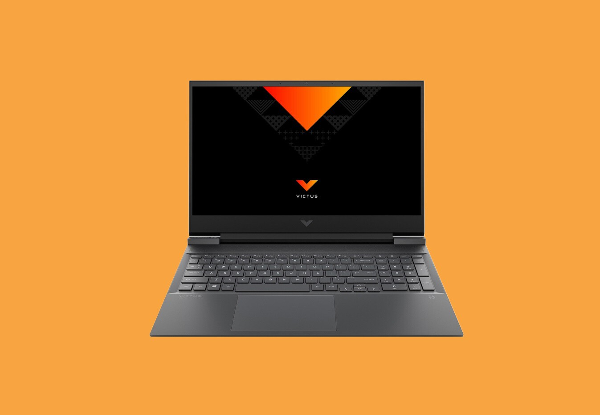

Casi nadie está utilizando el mejor objeto de League of Legends y el motivo es tan absurdo como comprensible
Leer más!Noticias

Para jugar a todo en ultra y 1080p no necesitas más: consigue este portátil gaming con RTX 3060 y Ryzen 7
Hace apenas unas semanas que se presentaron las nuevas tarjetas gráficas next-gen, algunas ya han llegado a las tiendas y próximamente desembarcarán en el terreno de los portátiles gaming.
Leer más!Últimos Posts
Jugar con amigos en Marvel Snap ya tiene fecha: todo lo que se sabe sobre esta esperada actualización
Leer más!
Todo sobre GTA 6: noticias sobre sobre su lanzamiento, ambientación y mapa, rumores y la filtración de Rockstar
Leer más!
“Queríamos superar los límites de la tecnología”: Un trabajador de Avatar: Frontiers of Pandora explica por qué el desarrollo ha sido tan largo
Leer más!“Nunca había tenido una conversación con ella”; Assassin’s Creed Odyssey conecta a un padre con su hija autista gracias a un paisaje emocionante
Leer más!
“Creo que Dave Bautista es genial, pero…”; la voz de Kratos en God of War insiste en que es la mejor opción para interpretar al personaje en la serie
Leer más!